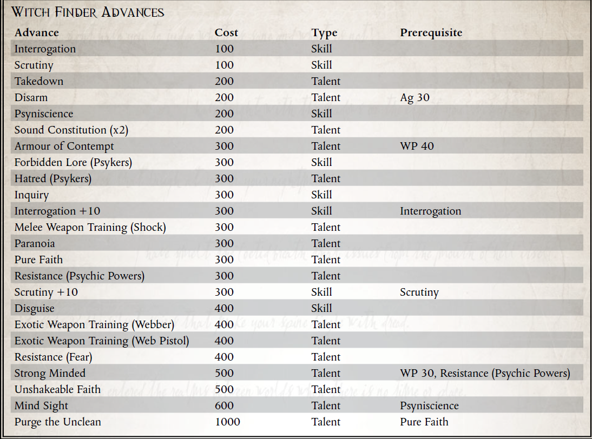

“在猎杀女巫时，信仰是你武器库中最强大的武器。不过，火焰喷射器也有帮助。”
-Araska Soli，赏金猎人
哪里有人类，哪里就有灵能者。无论是在 Scintilla 上的 Hive Sibellus 中心还是在 Lucin's Breath 的冰冷死水中搜索，这都是正确的。人类帝国在控制灵能者方面付出了极大的努力，黑船舰队不断地在银河系中穿梭，吞噬了无数来自人类世界的灵能者。然而，在帝国控制不严的地方，黑暗力量的涉猎者和流氓灵能者迅速出现。有时他们会提供他们的才能以换取金钱回报，而在其他地方，他们会利用他们来统治当地人口。有些人甚至去追求危险的亚空间实体，这些实体不仅对人类的生命构成可怕的威胁，而且对他不朽的灵魂构成了可怕的威胁。
在这些遥远的地方，诸如 Koronus Expanse、Adeptus Astra Telepathica 的黑船之类的地方很少会使任何世界的天空变暗。因此，由每个单独的世界、前哨站和船员来管理灵能者带来的风险。不这样做会迅速引发灾难。未经批准的灵能者可以随时撕开现实本身，将附近的所有人拖入地狱般的亚空间，或者释放出超出理智允许范围的其他恐怖。考虑到这些风险，许多船长、殖民监督者和其他有知识和手段的人安排他们的领地由受过寻找灵能者训练的个人搜索——无论这些女巫的寻找者是否合法地学会了他们的手艺。简而言之，猎巫者是任何具有寻找灵能者的技能和倾向的人，并涵盖那些猎杀如此危险的采石场的人，无论他们的个人动机或愿望是什么。
尽管许多即兴的猎巫以熊熊燃烧的火堆和无数黑色的尸体告终，但有些人在压制灵能者时更喜欢采取更微妙的方法。因此，一些在科罗努斯广域发现女巫的专家以他们操作的微妙而闻名，甚至以能够活捉大部分猎物而闻名。其中一些女巫发现者将他们捕获的灵能者放置在静止棺材中并运送它们进行处理。其他人则将他们的目标囚禁在受保护的房间内，一直为这些可恶的异教徒的灵魂祈祷。而且，当然，许多巫师发现者从他们收集的灵能者身上获利，将它们卖给有兴趣的买家，这些买家野心勃勃或愚蠢到渴望获得未经批准的灵能者的能力。由于没有针对此类人员的标准，因此每个人都以不同的方式运作。不同的巫师发现者以不同的方式集中他们的才能；有些人只关注金钱收益或个人进步，而另一些人则出于对个人、组织或理想的忠诚而采取行动。一些 Witch Finders 是由有权势的人赞助的，例如出现在 Expanse 中的一名流氓商人。其他团体，例如宗教崇拜、犯罪团伙，甚至贵族家族有时也会寻求猎巫者的服务，但取决于个人猎巫者的动机，这种进步可能不会受到欢迎。那些出于虔诚和责任感而服务的人通常不太愿意将被俘的灵能者交给阴暗的贵族，而那些将这项任务仅仅视为利润来源的人则不太可能应身无分文的邪教的要求而服务，不管怎样他们的工作所获得的精神回报可能是多么巨大。
传教士偶尔会雇用属于这一广泛类别的人员，尤其是在抵达怀疑有异常灵能者人口的世界时。一些对这些事情特别敏锐的传教士甚至可以说自己是巫师发现者，尽管他们使用这些技能来推动将世界转变为帝国信条的事业。
巫师寻找者与灵能者战斗的经验（无论是来自专注的训练还是仅仅来自对抗灵能敌人的生存）使得这些人在科罗努斯广域特别有价值，那里除了流氓人类灵能者之外还有灵能威胁。从 Eldar Farseers 到不可预测的 Ork Weirdboyz，通灵异形可能非常危险。即使他们并不过分担心自己船上人口中的灵能者，一些盗贼商人也会雇佣可能被视为女巫发现者的人，作为应对此类特殊威胁的应急措施。
对抗亚空间生物的邪恶存在并抵抗灵能者的腐蚀影响，需要强大的精神毅力储备。这不是一条人人都适合的道路，因为它需要自律和钢铁般的意志以及高强度的训练，以磨练使战士能够同时兼顾身心的技能。 Witch Finder 的生活并不轻松，尽管回报可能很大——取决于 Witch Finder 的个人动机。对一些人来说，这项工作本身可能是神圣的，可以帮助他们在来世登上圣座，而对另一些人来说，这可能是保护他们认为重要的群体或理想的一种手段。对于一些特别厌倦的人来说，这条险恶的道路可能只不过是一种残酷的生计。
所需职业：任何非 Psyker 探险家
替代等级：3 或更高 (10,000 xp)
要求：感知 40
其他要求：此Explorer 必须使用非致命方法非致命方法至少击败一名敌对灵能者或一名敌对灵能使用者。

新天赋：思维导图
先决条件：精神科学
探险者已经磨练了他对女巫邪恶痕迹的思考，并拥有一种超自然的能力来探测灵能者和亚空间实体的影响。
这个探索者可以花费一个命运点来自动通过心理科学测试，其成功度数等于他的感知奖励。